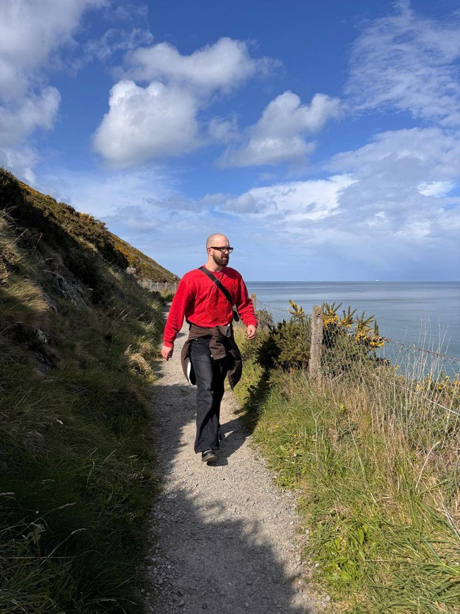
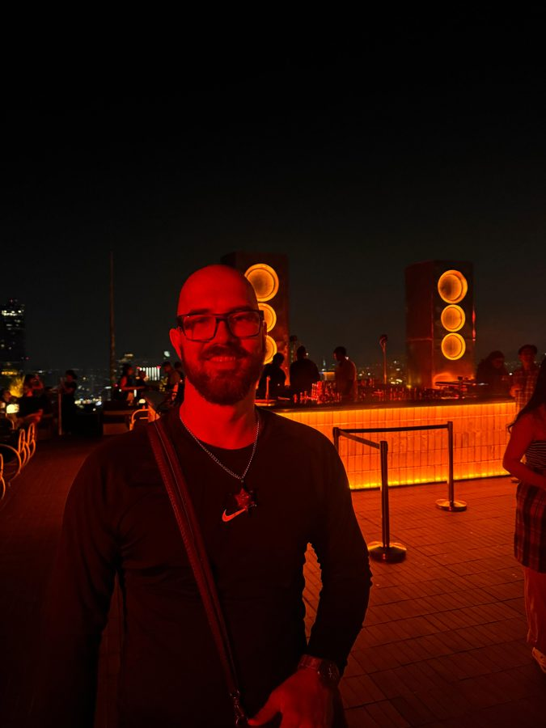
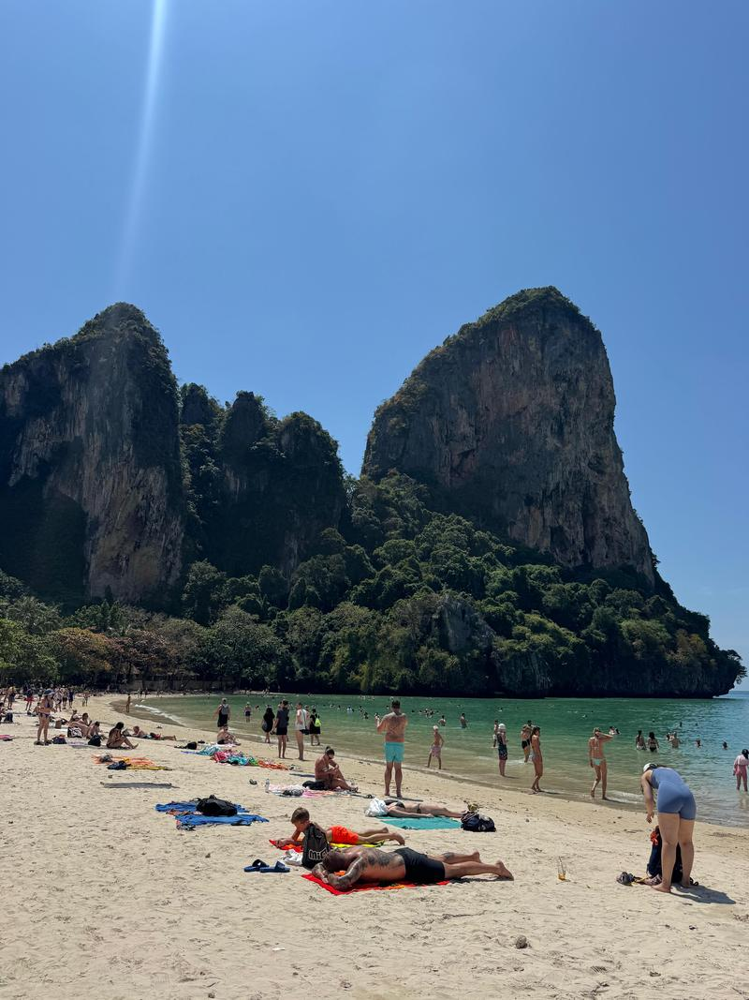

Salut, moi c'est
Andrea
Dupuis
J'ai fini le gymnase, et c'est là que ma vie a commencé. La suite est en dessous.
J'ai 24 ans, je vis à Lausanne. Lieutenant dans l'armée suisse, étudiant en relations internationales à Genève. Entre les deux, j'ai vécu à Dublin et à Munich.
L'armée m'a appris à m'organiser et à travailler sous stress. Le reste du temps, je nage, je grimpe et je cuisine. Prochaine étape : Taiwan.
Ce que je cherche, c'est ce mélange : la rigueur d'un côté, l'envie de découvrir de l'autre.
- Spontané
- Calme
- Curieux
Les lieux qui comptent
- Dublin Un premier départ
- Munich Après l'armée
- Genève Le bachelor, depuis 2025
- Taiwan La prochaine étape


Mon parcours
-
Bachelor en relations internationales
Université de Genève, depuis 2025
Je m'approche de la fin, et je pars en échange à Taiwan. C'est la seule chose que je n'ai choisie ni pour l'uniforme ni pour la montagne.
-
Lieutenant
Armée suisse, depuis janvier 2024
Je commande une section : instruire, planifier des journées entières, garder le calme et décider vite quand ça se tend. Un an et demi de service, et j'ai gradé. Certificat Leadership 1 en 2025, à côté.
-
Moniteur de ski
École suisse de ski, Gryon, hivers 2024 à 2026
Enseigner à des enfants et à des adultes, ce qui n'est pas le même métier : on n'explique pas un virage de la même façon à six ans et à quarante. Et garder tout le monde en sécurité sur les pistes, ce qui reste la vraie tâche.
-
Serveur
Brother Hubbard, Dublin, octobre à décembre 2022
Trois mois en salle, à un rythme qui ne laissait pas le temps de réfléchir. Mon premier vrai travail, dans une langue qui n'était pas la mienne. C'est là que j'ai appris à tenir un service.
Langues
-
Français Langue maternelle
-
Anglais Bilingue
-
Allemand Je me débrouille
-
Suisse allemand Notions
Ce que je sais tenir
Conduite
- Leadership et conduite d'équipe
- Prise de décision sous pression
- Gestion des conflits
Tenue
- Rigueur et discipline
- Sens des responsabilités
Plutôt
- Matin Soir
- Plan Impro
- Équipe Solo
- Ville Nature
- Parler Écouter
- Vitesse Précision
- Routine Nouveauté
- Dedans Dehors
En quelques chiffres
La cuisine, c'est le truc que je fais vraiment bien.
C'est le contraire du reste. Personne à commander, rien à planifier, pas de consignes de sécurité à donner. On ouvre le frigo et on décide en marchant. Je nage et je grimpe aussi, mais c'est la cuisine qui revient le plus souvent.
On se parle ?
Écris-moi, appelle-moi, ou passe me voir en montagne.